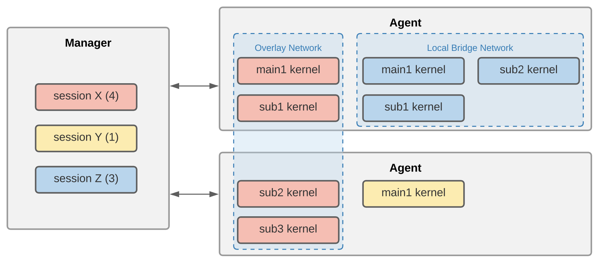
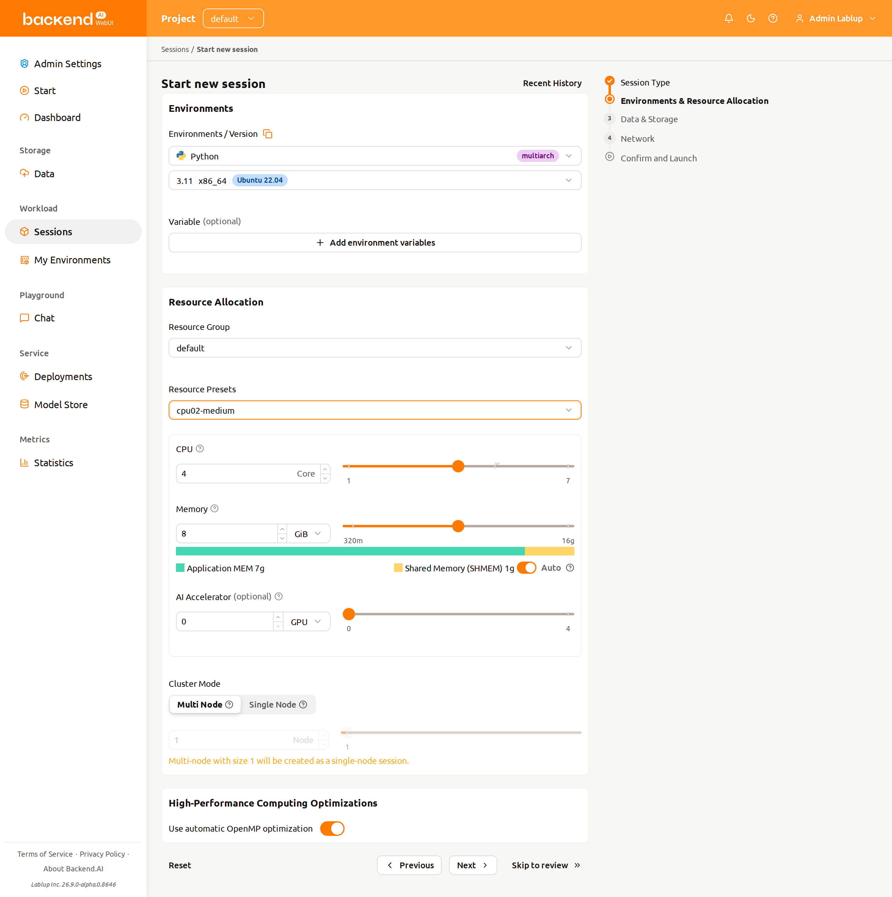
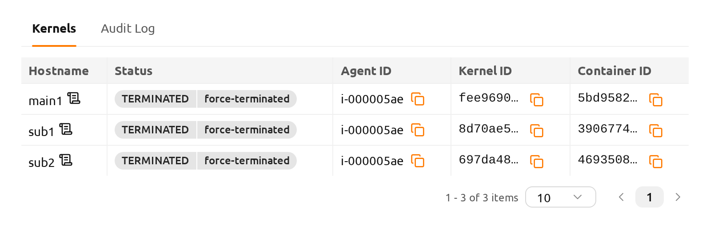
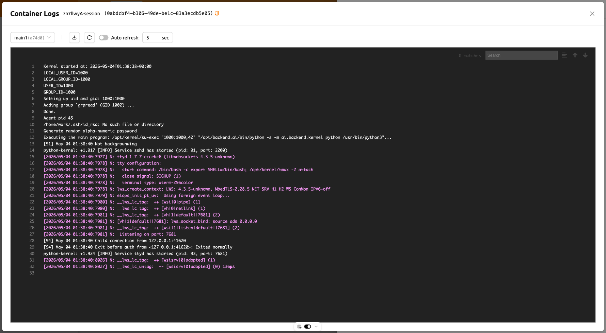

Backend.AI Cluster Compute Session#
Overview of Backend.AI cluster compute session#
Backend.AI supports cluster compute session to support distributed computing /
training tasks. A cluster session consists of multiple containers, each of which
is created across multiple Agent nodes. Containers under a cluster session are
automatically connected each other through a dynamically-created private
network. Temporary domain names (main1, sub1, sub2, etc.) are also
given, making it simple to execute networking tasks such as SSH connection. All
the necessary secret keys and various settings for SSH connection between
containers are automatically generated.
For detailed about Backend.AI cluster session, refer to the following.

Containers under a cluster session are created across one or more Agent nodes which belon to a resource group.
A cluster session consists of one main container (
main1) and one or more sub containers (subX).All containers under a cluster session are created by allocating the same amount of resources. In the figure above, all four containers of session X are created with the same amount of resources.
All containers under a cluster session mount the same storage folder specified when creating a compute session.
All containers under a cluster session are tied to a private network.
- The name of the main container is
main1. - Sub-containers are named as
sub1,sub2, ... in the increasing order. - There is no firewall between the containers that make up a cluster session.
- Users can directly connect to the main container, and sub-containers can only be connected from the main container.
- The name of the main container is
There are two modes/types of cluster session.
- Single node cluster session: A cluster session composed of two or more containers on one, same physical node. In the figure above, this is session Z, which is bound to a local bridge network.
- Multi-node cluster session: A cluster session composed of two or more containers on different Agent nodes. In the picture above, this is session X, which is bound to an overlay network.
- A compute session with only one container is classified as normal compute session, not a cluster session. In the figure above, this is session Y.
A single node cluster session is created in the following cases.
- When "Single Node" is selected for the Cluster Mode field when creating a
compute session. If there is no single agent with enough resources to
create all containers at the same time, the session will stay in a pending
(
PENDING) state. - “Multi Node” is selected for Cluster Mode, but there is a single agent with enough resources that can create all containers at the same time, then, all containers are deployed on that agent. This is to reduce network latency as much as possible by excluding external network access.
- When "Single Node" is selected for the Cluster Mode field when creating a
compute session. If there is no single agent with enough resources to
create all containers at the same time, the session will stay in a pending
(
Each container in a cluster session has the following environment variables. You can refer to it to check the cluster configuration and currently connected container information.
BACKENDAI_CLUSTER_HOST: the name of the current container (ex.main1)BACKENDAI_CLUSTER_HOSTS: Names of all containers belonging to the current cluster session (ex.main1,sub1,sub2)BACKENDAI_CLUSTER_IDX: numeric index of the current container (ex.1)BACKENDAI_CLUSTER_MODE: Cluster session mode/type (ex.single-node)BACKENDAI_CLUSTER_ROLE: Type of current container (ex.main)BACKENDAI_CLUSTER_SIZE: Total number of containers belonging to the current cluster session (ex.4)BACKENDAI_KERNEL_ID: ID of the current container (ex.3614fdf3-0e04-...)BACKENDAI_SESSION_ID: ID of the cluster session to which the current container belongs (ex.3614fdf3-0e04-...). The main container'sBACKENDAI_KERNEL_IDis the same asBACKENDAI_SESSION_ID.
Use of Backend.AI cluster compute session#
In this section, we will take a look at how to actually create and use cluster compute sessions through the user GUI.
In the Sessions page, open the session creation dialog and set it in the same way as creating a normal compute session. The amount of resources set at this time is the amount allocated to one container. For example, if you set 4 CPUs, 4 cores are allocated to each container under a cluster session. Please note that this is not the amount of resources allocated to entire cluster computing session. To create a cluster compute session, server resources equal to N times the amount of resources set here are required (N is the cluster size). Also, don't forget to mount the storage folder for data safekeeping.

In the "Cluster Mode" field at the bottom, you can choose what type of cluster you want to create.
- Single Node: All containers are created on one Agent node.
- Multi Node: Containers are created across multiple Agent nodes within a resource group. However, if all containers can be created in one physical node, all of them are created on that node. This is to minimize network latency between the containers.
Set the "Cluster Size" below it. If set to 3, a total of three containers will be created including the main container. These three containers are bound under a private network to form one compute session.
Click the Launch button to send a request to create a compute session, and wait for a while to get a cluster session. After the session is created, you can view the created containers on the session details page.

Let's open the terminal app in the compute session we just have created. If you
look up the environment variables, you can see that the BACKENDAI_CLUSTER_*
variables described in the above section are set. Compare the meaning and value
of each environment variable with the description above.

You can also SSH into the sub1 container. No separate SSH setting is
required, just issue the command ssh sub1 and you are done. You can see the
hostname after work@ has changed, which indicated the sub container's shell
is displayed.

In this way, Backend.AI makes it easy to create cluster computing sessions. In order to execute distributed learning and calculation through a cluster calculation session, a distributed learning module provided by ML libraries such as TensorFlow/PyTorch, or additional supporting software such as Horovod, NNI, MLFlow, etc. is required, and code in a way that can utilize the software. Must be written carefully. Backend.AI provides a kernel image containing the software required for distributed learning, so you can use that image to create a nice distributed learning algorithm.
See logs per container#
You can check each log of container in logs modal. It will help you
to understand what's going on not only in main container but also sub containers.
